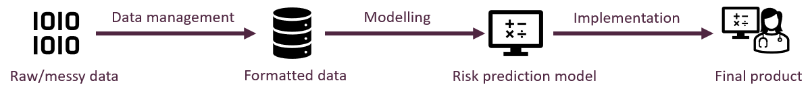
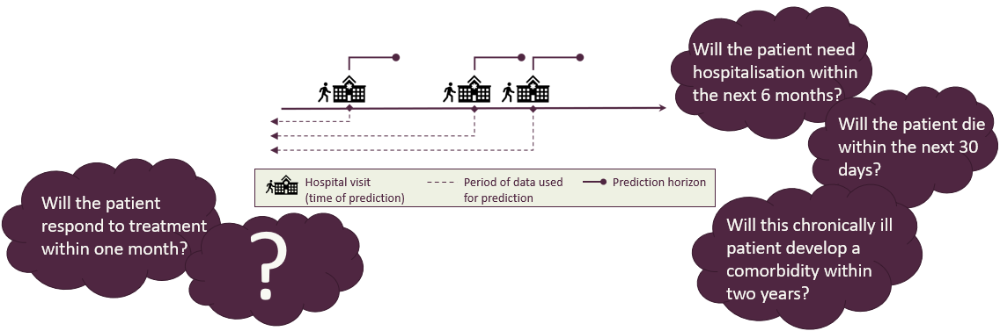
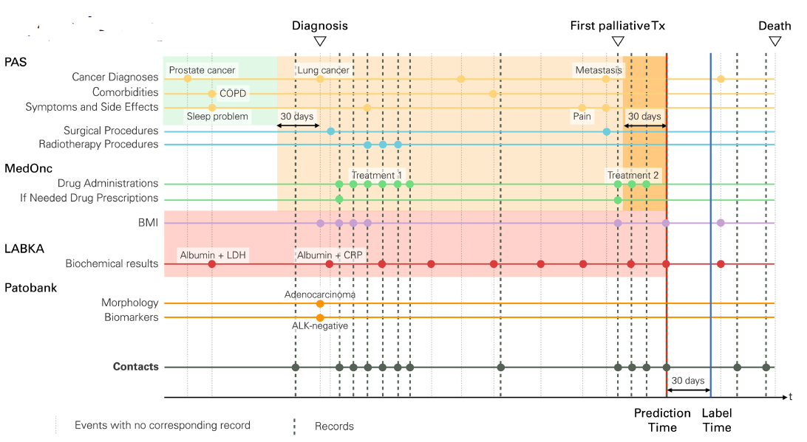

Development and implementation of machine learning models for dynamic risk prediction in health care applications
The participants are expected to have basic knowledge on regression analysis as well as programming experience in a statistical software tool, such as R or Python.
Access Sandbox resources
Our first choice is to provide all the training materials, tutorials, and tools as interactive apps on UCloud, the supercomputer located at the University of Southern Denmark. Anyone using these resources needs the following:
- a Danish university ID so you can sign on to UCloud via WAYF1.
Basic ability to navigate in Linux/RStudio/Jupyter. You don’t need to be an expert, but it is beyond our ambitions (and course material) to teach you how to code from zero and how to run analyses simultaneously. We recommend a basic R or Python course before diving in.
For workshop participants: Use our invite link to the correct UCloud workspace that will be shared on the day of the workshop. This way, we can provide you with compute resources for the active sessions of the workshop2 Click the link below after your first uCloud access and accept the invite that shows.
Invite link to uCloud workspace
- Notebooks and scripts can be downloaded here:
- Course slides can be downloaded here:
- COURSE EVALUATION SURVEY - The Novo Nordisk Foundation funds the Sandbox project and is interested in the outcomes of our training activities, so we really appreciate your responses!
Course Agenda
Part 1
| Subjects |
|---|
| Introduction the course |
Part 2
| Subjects |
|---|
| Introduction to dynamic risk prediction |
| Data sources and biases |
| Data management |
Part 3
| Subjects |
|---|
| Machine learning models |
| Model Training |
| Utility and explainability |
Part 4
| Subjects |
|---|
| Hosting and access to data |
| FHIR |
| Prospective validation |
Description
Traditional risk prediction generates a risk estimate at a defined timepoint in a patient’s disease trajectory, for example the risk of death within 30 days following a surgical procedure. In contrast, dynamic risk prediction enables prediction of risk at any time point. This allows to continuously monitor a patient’s risk profile and forms the basis for intervention if the predicted risk increases. In this course, we will explore methodological and technical solutions, as well as corresponding challenges, for developing and implementing such solutions in health care. The course includes the following topics:
The journey from raw data to implementation
Traditional risk prediction generates a risk estimate at a defined timepoint in a patient’s disease trajectory, for example the risk of death within 30 days following a surgical procedure. In contrast, dynamic risk prediction enables prediction of risk at any time point. This allows to continuously monitor a patient’s risk profile and forms the basis for intervention if the predicted risk increases. In this course, we will explore methodological and technical solutions, as well as corresponding challenges, for developing and implementing such solutions in health care. The course includes the following topics:
- Data management: This part of the course considers the challenges of preparing heterogenous longitudinal health data for prediction. We will cover the various steps involved in this process, including data formatting, feature engineering, and splitting strategies for model validation. This will include discussion about how to handle irregularly sampled health data, data leakage, class imbalance, temporal robustness, normalization, and other potential biases.
- Modelling: In this part of the course, participants will be led through the process of building such models. We will introduce both basic and more advanced dynamic machine learning prediction algorithms, such as gradient tree boosting, random forest, and LSTM and discuss issues related to performance metrics and hyperparameter optimization, for example Bayesian optimization.
- Implementation: In the last part of the course, we will consider the challenges associated with the implementation of predictive tools in the clinic. This includes technical aspects about hosting, user interface, and access to live data, including an introduction to the FHIR standard. Regulatory and organizational issues will also be discussed. During the project the participants will get hands on experience covering realistic scenarios related to the subjects discussed. This will include data management of representative data sets, training models and hands on introduction to the FHIR set-up.

Illustration of a journey from raw data to implementation: A simplified illustration of the process of making raw data into a product, by formatting the data and build a model which takes the data as input.
Dynamic risk prediction in a nutshell
AIM: Providing risk estimates of specifiv event and update these over time

Example of setup: Illustration of the complex decision-making process clinicians navigate during patient interactions, with focus on the critical questions they must address and how these considerations evolve throughout the patient’s care timeline.
What do we need in the setup of dynamic risk
- Cohort of patients: A group of individuals being monitored over time for clinical outcomes or disease progression.
- Prediction time points \(t_{ij}\) for patient \(i\) and \(j_{th}\) time point: The specific moments when predictions are made for patient i at their jth time point.
- Binary outcome \(Y(t_{ij})\) for each prediction time: clinical outcome measures as “yes/no” (like disease, hospitalization, or recovery) at each prediction time point.
Regularly or irregularly triggered?: As the clinical measurements and prediction points can occur either at fixed, regular intervals (like every third months or once a year) or at irregular intervals based on patient visits or clinical events.
- Predictors
- Baseline/static data \(X_i\) for patient \(i\): These are characteristics that do not change over time for each patient, such as biological sex, date of birth, or genetic factors.
- Time dependent data \(Z_i(t)\) for patient \(i\): These are measurements that change over time, like weight, lab values, or prescriptions of medicine and amount collected at various time points.

Add explanation: This illustration is showing multiple prediction of a patient which arrives in irregular intervals.
Why predict in health care applications?
Estimating risk can help us:
- Detect disease on early stage
- Prevent disease
- Target treatment
- Optimise use of health care ressources, e.g. in screening programs
- Etc.
Predictive analytics in healthcare applications offers value by providing proactive rather than reactive care. Using patient data and clinical patterns, these tools can identify individuals at risk before symptoms worsen or happen, allowing for earlier interventions when treatments are typically more effective and less costly. Predictive models help healthcare systems allocate limited resources more efficiently, emphasizing the patient who needs intensive care. Predictive models can significantly improve patient outcomes while potentially preventing costly emergency interventions and hospitalizations in the healthcare system.
Why use dynamic risk prediction in health care?
Risk of event seldomly stationary, it is dynamic
- Risk of adverse event can e.g. increase the longer the patient has suffered from the disease
- Risk of dying within the next year can depend on how long the patient has survived so far with the disease and the patient’s current health
→ a one-time prediction is not always precise enough
Motivation
Applying Systemic Anti-Cancer Treatment (SACT) is a motivation for predictive modeling for cancer patients, as it ensures patients receive the right SACT at the right time. Not only does this optimize survival rates, but it also potentially maximizes the quality of remaining life for patients. There is a fine balance between when to provide a patient with SACT as it can decrease a patient’s life quality over time. The purpose of using SACT should be to make a patient able to recover and survive (Best-case scenario). It can cause a patient to suffer more in the remaining lifetime, which could mean that a patient’s outcome would be worse with SACT than without (Worst-case scenario). Therefor are dynamic predictive models a important measure to help the clinicians make a better informed decision to either save the point or to spare them suffering.

A model of health-related quality of life for a patient with limited survival: A illustration of the possible scenarious in short-term survial predictions
Using Extensice Health Data
Predictive modeling demands data in vast amounts, while also the data must be high quality and organized sequentially. This ensures that the model recognizes patterns and makes accurate predictions based on historical trends. The data sourcing is comprehensive and complex in terms of multiple stakeholders are involved. There is a necessary to access specialized and highly restrictive health databases such as PAS (Patient Administration System), MedOnc (Medical Oncology database), LABKA (Lab Information System), and Patobank (Pathology Registry). These databases offer in-depth patient-related information crucial for accurate predictions. It is important to acknowledge that this data extraction and integration is challenging. Once access to these databases is secured, data preparation is the next step in the predictive modeling process. Relevant variables from these databases are identified and merged into a unified dataframe for a streamlined analysis. Time factors are some of the most important variables to understand and define before executing predictive modeling. For instance, when predicting the short-term likelihood of a patient’s death within 30 days, it is essential to have certain important events for the time series analysis. This includes the time of diagnosis, the initiation of palliative treatments, and the actual time of death, among other relevant markers.
Example of records for a patient: This figure shows patient survival predictions made at various time points, where each dot represents a data point, with markers for clinical factors including ALK, anaplastic lymphoma kinase gene; BMI, body mass index; COPD, chronic obstructive pulmonary disease; CRP, C-reactive protein; LDH, lactate dehydrogenase; Tx, treatment
Summary
tba
Footnotes
Other institutions (e.g. hospitals, libraries, …) can log on through WAYF. See all institutions here↩︎
To use Sandbox materials outside of the workshop: remember that each new user has hundreds of hours of free computing credit and around 50GB of free storage, which can be used to run any uCloud software. If you run out of credit (which takes a long time) you’ll need to check with the local DeiC office at your university about how to request compute hours on UCloud. Contact us at the Sandbox if you need help or want more information.↩︎